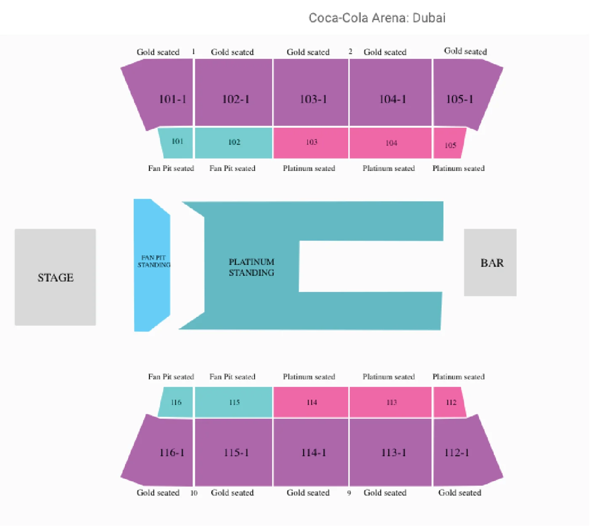
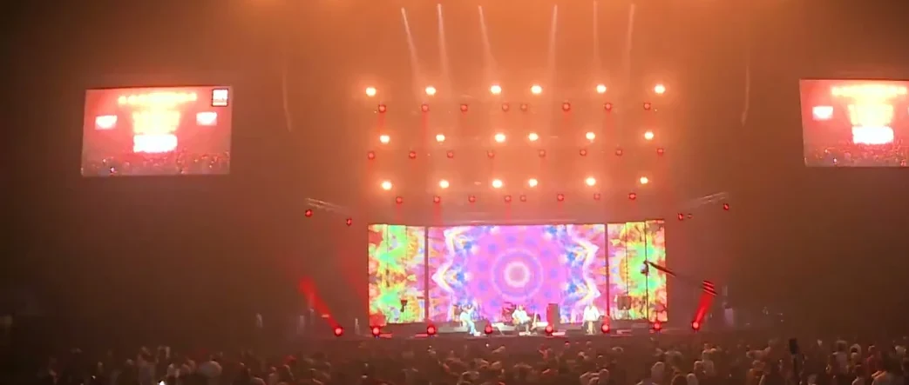
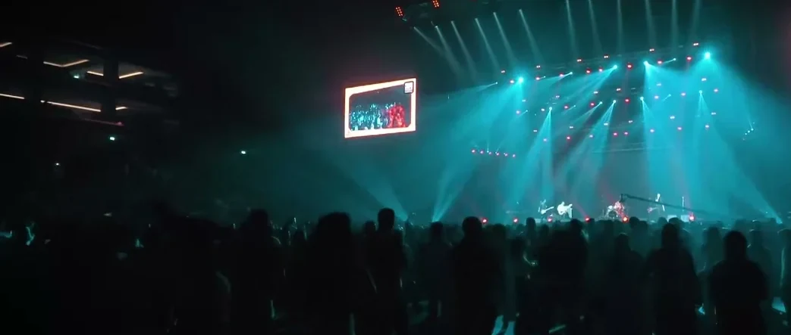
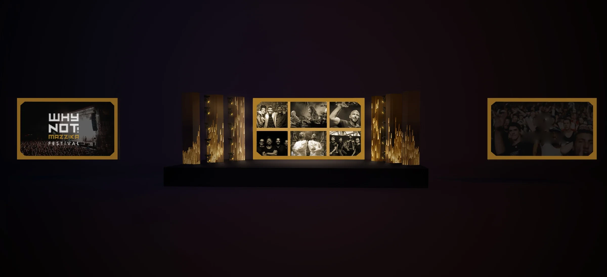

Why Not! Mazzika
Coca-Cola Arena, Dubai · 22 November 2019 · film by MCX
Why Not! Mazzika
One night at the Coca-Cola Arena.Antoni Gerges, Creative Director, Brand & Experiential · AntBrush, with MCX
Before the festival, and after.
Six Egyptian acts, one shared visual world.
Read more
As a partner at MCX through AntBrush, I led the creative direction and co-produced the festival with the team, connecting the campaign, artist films and arena screens.
The festivalWhy Not! Mazzika Festival: six Egyptian acts in one night at the Coca-Cola Arena, Dubai, on 22 November 2019. Festival by MCX, my partner venture, through AntBrush, for live entertainment and corporate events. Sponsor: SWYP.
I was the festival’s creative director: its design, its setup and its branding inside the arena, and at front of house on the night. The frame system, the campaign artwork, the seating plan, the stage design direction, the screen films and the screen sizes.
One frame for everything: a black box with its corners cut, on gold. Every act steps into it. Six of them make the key visual. Then the same frame goes onto the stage.
The stage mock-up of 24 October 2019 was drawn by Studio One under my direction: a centre screen, six pillars and two side screens, all carrying the frame.
The name is the idea: Why not? is a question; Why Not! is an answer. The mark is built on a square: a square O and an exclamation mark. Square for the feed, tall for the story, wide for the banner: the same tiles in a new order, and the flyers, lampposts and radio followed the same rule.
AntBrush made the screen films that played on the centre screen on the night, and six short films for Instagram, one for each act. The festival film and the act films of the night are MCX’s.
An end stage. In front of it the floor, in two standing zones. Seats along both long sides. Front of house in the middle of the floor, and a bar at the far end.
Six acts share one stage in one night: one wide deck at the short end of the hall, wings left and right, a barrier in front. Over it, a grid flown from the roof.


One centre screen for each band’s pictures and the festival’s. Six pillars beside it, three a side, each 208 × 1144 px, run with it as one picture on one canvas 3328 px wide. Two side screens, flown high, put the live camera inside the same cut-corner frame as every poster.
Rows of truss over the stage carry the moving lights, with short rows at the sides and more on the floor. Two sound hangs fly left and right, with monitors along the front for the bands.
The sound, light and video desks sat together on one riser in the middle of the floor, with the bands’ own operators. I worked from there on the night.
The festival’s ten-second clips also went to the arena’s own screens, outdoors and indoors.
Disco Misr · H.O.H · Mahmoud El Esseily · Massar Egbari · Sharmoofers · Cairokee
The 3D model was made for this portfolio: the hall from our seating plan; the stage, screens, light and sound from the films.
Stage mock-ups: Studio One, under my direction. Show production: Artes ME. Sponsor: SWYP. Venue: Coca-Cola Arena, Dubai. Festival film and act films of the night: MCX. Screen films and act films for Instagram: AntBrush.
What we delivered.
Visual system
- Key visual and its frame system
- Six act frames
- Visual-system film
- Ticket-status artwork
Screens & content
- LED perimeter and screen content
- Sponsor content specs for 100 arena screens
Tickets & sponsors
- Ticketing and flash-sale mechanics
- Sponsor onboarding and stand approvals: G-SHOCK, Al Ansari, Red Bull
The visual-system film 
Screen content in the arena, 22 November 2019 
A side screen over the crowd
From the job register, the project mail and the delivered files.
One frame,
for everything.
A black box with its corners cut, on gold. On the arena’s screens it builds itself, then turns into an object. In the key visual it holds all six acts.
Every act
steps in.
One film for each act: the empty frame, the act inside it, then the date and the arena.
Six films for InstagramAntBrush · September and October 2019
The full sets, on the night · films by MCX
The stage,
on paper.
The same frame on every screen: one centre screen, six pillars, two side screens.

Then the arena,
in 3D.
Each model, then the real thing.
What goes where
An end stage, the floor in two zones, seats along both sides.
The stage
One wide deck for six acts, under a grid flown from the roof.
The LED system
One centre screen, six pillars, two side screens.
The light
The rows of truss over the stage carry the moving lights.
The sound
Two hangs flown left and right, monitors along the front.
Front of house
Sound, light and video on one riser, facing the stage. I worked from there.
Every screen, one frame
Each side screen puts the live camera inside the poster’s frame.
Full house
The same hall, from front of house, that night.
Lights.
One rig, a different room for every act.Festival film · MCX
Stage.
Six acts, one after another, on one stage. Here, Cairokee.Act film · MCX · at 4:04
Full.
The hall, lit by its own phones. Then the film of it all.Festival film · MCX
Creative Director, Brand & Experiential
At MCX: Partner, Creative Director & Co-producer.
Screen films and act films for Instagram: AntBrush.
Stage mock-ups: Studio One, under my direction.